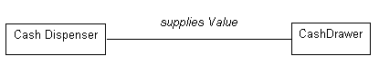
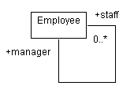
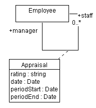

| Guideline: Association |
 |
|
| Related Elements |
|---|
AssociationsAssociations represent structural relationships between objects of different classes; they represent connections between instances of two or more classes that exist for some duration. Contrast this with transient links that, for example, exist only for the duration of an operation. These latter situations can instead be modeled using collaborations, in which the links exist only in particular limited contexts. You can use associations to show that objects know about another objects. Sometimes, objects must hold references to each other to be able to interact, for example send messages to each other; thus, in some cases associations may follow from interaction patterns in sequence diagrams or communication diagrams. Association NamesMost associations are binary (exist between exactly two classes), and are drawn as solid paths connecting pairs of class symbols. An association may have either a name or the association roles may have names. Role names are preferable, as they convey more information. In cases where only one of the roles can be named, roles are still preferable to association names so long as the association is expected to be uni-directional, starting from the object to which the role name is associated. Associations are most often named during analysis, before sufficient information exists to properly name the roles. Where used, association names should reflect the purpose of the relationship and be a verb phrase. The name of the association is placed on, or adjacent to the association path. Example In an ATM, the Cash Drawer provides the money that the Cash Dispenser dispenses. In order for the Cash Dispenser to be able to dispense funds, it must keep a reference to the Cash Drawer object; similarly, if the Cash Drawer runs out of funds, the Cash Dispenser object must be notified, so the Cash Drawer must keep a reference to the Cash Dispenser. An association models this reference.
 An association between the Cash Dispenser and the Cash Drawer, named supplies Value. Association names, if poorly chosen, can be confusing and misleading. The following example illustrates good and bad naming. In the first diagram, association names are used, and while they are syntactically correct (using verb phrases), they do not convey much information about the relationship. In the second diagram, role names are used, and these convey much more about the nature of the participation in the association.
Examples of good and bad usage of association and role names RolesEach end of an association is a role specifying the face that a class plays in the association. Each role must have a name, and the role names opposite a class must be unique. The role name should be a noun indicating the associated object's role in relation to the associating object. A suitable role name for a Teacher in an association with a Course Section would, for instance, be lecturer; avoid names like "has" and "contains", as they add no information about what the relationships are between the classes. Note that the use of association names and role names is mutually exclusive: one would not use both an association name and a role name. Role names are preferable to association names except in cases where insufficient information exists to name the role appropriately (as is often the case in analysis; in design role names should always be used). Lack of a good role name suggests an incomplete or ill-formed model. The role name is placed next to the end of the association line. Example Consider the relationships between classes in an order entry system. A Customer can have two different kinds of Addresses: an address to which bills are sent, and a number of addresses to which orders may be sent. As a result, we have two associations between Customer and Address, as shown below. The associations are labeled with the role the associated address plays for the Customer.
Associations between Customer, Address, and Order, showing both role names and multiplicities MultiplicityFor each role you can specify the multiplicity of its class, how many objects of the class can be associated with one object of the other class. Multiplicity is indicated by a text expression on the role. The expression is a comma-separated list of integer ranges. A range is indicated by an integer (the lower value), two dots, and an integer (the upper value); a single integer is a valid range, and the symbol '*' indicates "many", that is, an unlimited number of objects. The symbol '*' by itself is equivalent to '0..*', that is, any number including none; this is the default value. An optional scalar role has the multiplicity 0..1. Example In the previous example, multiplicities were shown for the associations between Order and Customer, and between Customer and Address. Interpreting the diagram, it says that an Order must have an associated Customer (the multiplicity is 1..1 at the Customer end), but a Customer may not have any Orders (the multiplicity is 0..* at the Order end). Furthermore, a Customer has one billing address, but has one or more shipping address. To reduce notational clutter, if multiplicities are omitted, they may be assumed to be 1..1. NavigabilityThe navigability property on a role indicates that it is possible to navigate from a associating class to the target class using the association. This may be implemented in a number of ways: by direct object references, by associative arrays, hash-tables, or any other implementation technique that allows one object to reference another. Navigability is indicated by an open arrow, which is placed on the target end of the association line next to the target class (the one being navigated to). The default value of the navigability property is true. Example In the order entry example, the association between the Order and the Customer is navigable in both directions: an Order must know which Customer placed the Order, and the Customer must know which Orders it has placed. When no arrowheads are shown, the association is assumed to be navigable in both directions. In the case of the associations between Customer and Address, the Customer must know its Addresses, but the Addresses have no knowledge of which Customers (or other classes, since many things have addresses) are associated with the address. As a result, the navigability property of the Customer end of the association is turned off, resulting in the following diagram:
Updated Order Entry System classes, showing navigability of associations. Self-AssociationsSometimes, a class has an association to itself. This does not necessarily mean that an instance of that class has an association to itself; more often, it means that one instance if the class has associations to other instances of the same class. In the case of self-associations, role names are essential to distinguish the purpose for the association. Example Consider the following self-association involving the class Employee:
 In this case, an employee may have an association to other employees; if they do, they are a manager, and the other employees are members of their staff. The association is navigable in both directions since employees would know their manager, and a manager knows her staff. Multiple AssociationsDrawing two associations between classes means objects are related twice; a given object can be linked to different objects through each association. Each association is independent, and is distinguished by the role name. As shown above, a Customer can have associations to different instances of the same class, each with different role names. Ordering RolesWhen the multiplicity of an association is greater than one, the associated instances may be ordered. The ordered property on a role indicates that the instances participating in the association are ordered; by default they are an unordered set. The model does not specify how the ordering is maintained; the operations that update an ordered association must specify where the updated elements are inserted. LinksThe individual instances of an association are called links; a link is thus a relationship among instances. Messages may be sent on links, and links may denote references and aggregations between objects. See Guideline: Communication Diagram for more information. Association ClassesAn association class is an association that also has class properties (such as attributes, operations, and associations). It is shown by drawing a dashed line from the association path to a class symbol that holds the attributes, operations, and associations for the association. The attributes, operations, and associations apply to the original association itself. Each link in the association has the indicated properties. The most common use of association classes is the reconciliation of many-to-many relationships (see example below). In principle, the name of the association and class should be the same, but separate names are permitted if necessary. A degenerate association class just contains attributes for the association; in this case you can omit the association class name to de-emphasize its separateness. Example Expanding the Employee example from before, consider the case where an Employee (a staff-person) works for another Employee (a manager). The manager performs a periodic assessment of the staff member, reflecting their performance over a specific time period. The appraisal cannot be an attribute of either the manager or the staff member alone, but we can associate the information with the association itself, as shown below:
 The association class Appraisal captures information relating to the association itself Qualified AssociationsQualifiers are used to further restrict and define the set of instances that are associated to another instance; an object and a qualifier value identify a unique set of objects across the association, forming a composite key. Qualification usually reduces the multiplicity of the opposite role; the net multiplicity shows the number of instances of the related class associated with the first class and a given qualifier value. Qualifiers are drawn as small boxes on the end of the association attached to the qualifying class. They are part of the association, not the class. A qualifier box may contain multiple qualifier values; the qualification is based on the entire list of values. A qualified association is a variant form of association attribute. Example Consider the following refinement of the association between Line Item and Product: a Line Item has an association to the Product which is ordered. Each Line Item refers to one and only one Product, while a Product may be ordered on many Line Items. By qualifying the association with the qualifier ProductCode we additionally indicate that each product has a unique product code, and that Line Items are associated with Products using this product code.
The association between Line Item and Product has the qualifier ProductCode. N-ary AssociationsAn n-ary association is an association among three or more classes, where a single class can appear more than once. N-ary associations are drawn as large diamonds with one association path to each participating class. This is the traditional entity-relationship model symbol for an association. The binary form is drawn without the diamond for greater compactness, since they are the bulk of associations in a real model. N-ary associations are fairly rare and can also be modeled by promoting them to classes. N-ary associations can also have an association class; this is shown by drawing a dashed line from the diamond to the class symbol. Roles may have role names but multiplicity is more complicated and best specified by listing candidate keys. If given, the multiplicity represents the number of instances corresponding to a given tuple of the other N-1 objects. Most uses of n-ary associations can be eliminated using qualified associations or association classes. They can also be replaced by ordinary classes, although this loses the constraint that only one link can occur for a given tuple of participating objects. |


© Copyright IBM Corp. 1987, 2006. All Rights Reserved. |